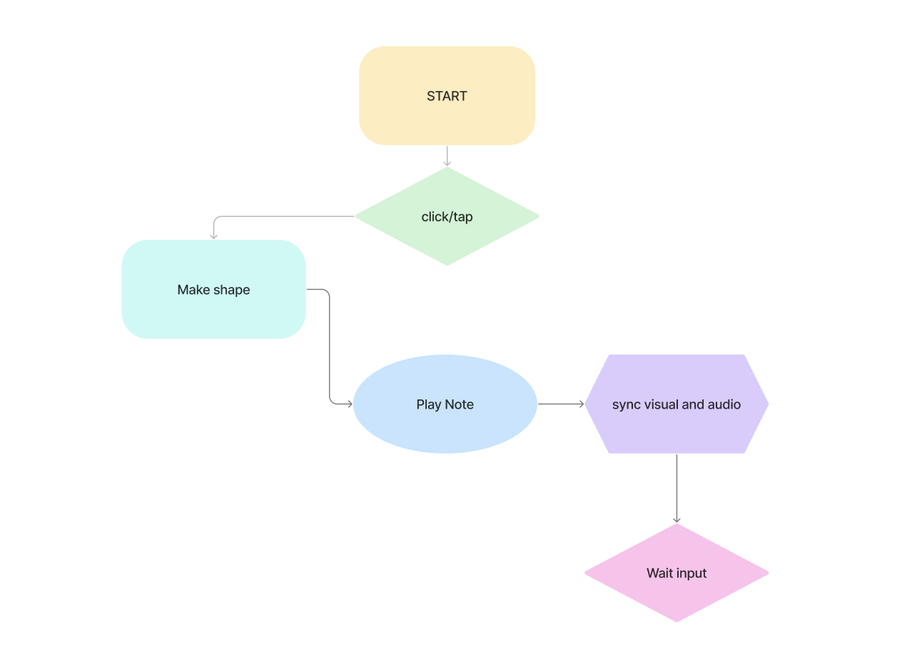

Interactive UI responding to the “No Text Characters” prompt
Created by Rania Nazzal
An interactive prototype blending
shapes, colour and sound.
This project responds to the “No text characters” prompt. The interface communicates only through shapes, colours, and sounds.
Built with p5.js and p5.sound.
Math.random()) adds variation in size,
colour & duration
System Map:
Peers found clicking to make sound intuitive: “Simple, fun, and effective!”
Playful visuals + melody worked well, but some colours clashed. Suggestions included smoother fade-outs & clearer pitch mapping.
Click below to try it:
Try the PrototypeThe prototype successfully demonstrates a text-free, sensory-based interface. Through testing and refinement, it shows potential for education, creativity, and accessibility.